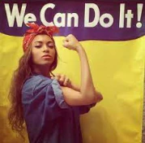
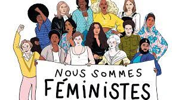
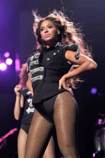

II est évident , lorsque l'on pense féminisme, on pense Beyoncé. Cependant lorsque Beyoncé se revendique féministe et l'affiche en grand lors de ses concert cela fait débat et suscites beaucoup de discussion dans la presse américaine. Elle serait soit une chanteuse sexualisée qui se définit d'après le regard des hommes , soit un symbole antiféministe qui se sert du féminisme uniquement dans un but commerciale.
En 2000 avec son groupe Destiny's child, Beyoncé défend l'indépendance économique des femmes dans "Independant woman". Une idée que l'on retrouve en 2011 dans son clip "run the worlds (girls)" ou une armée d'amazones affronte et remporte la bataille contre des policiers incrédules. Enfin, dans "pretty hurts" elle dénonce les diktats de beauté qui pèsent sur les femmes et son clip représentant un concours de miss contre la concurrence et la jalousie qui s'installent entre les femmes.
Parmi ses derniers titres les plus emblématiques ,on peut citer "flawless" dans lequel Beyoncé reprend un extrait du livre pour quoi nous devrions tous être féministes , de l'écrivaine nigériane Chimamanda Ngozi adichie et qui se clôt par la phrase : "une féministe , c'est une personne qui croit à l'égalité sociale , politique et économique entre les sexes.".
Elle l'interprète en 2014 en clôture du mtv video music awards regardé par 12 millions d'américains. cette même année, Beyoncé est élue "femme la plus influente du monde "par le magazine time. au delà du contenu de ses chansons et des messages qu'elle porte dans ses interviews, certain considèrent que s'habiller de manière dénudée et sexualisée comme le fait Beyoncé , c'est se définir dans le regard des hommes.
II est évident , lorsque l'on pense féminisme, on pense Beyoncé. Cependant lorsque Beyoncé se revendique féministe et l'affiche en grand lors de ses concert cela fait débat et suscites beaucoup de discussion dans la presse américaine. Elle serait soit une chanteuse sexualisée qui se définit d'après le regard des hommes , soit un symbole antiféministe qui se sert du féminisme uniquement dans un but commerciale. Photo de Beyoncé Pour l'indépendance des femmes En 2000 avec son groupe Destiny's child, Beyoncé défend l'indépendance économique des femmes dans "Independant woman". Une idée que l'on retrouve en 2011 dans son clip "run the worlds (girls)" ou une armée d'amazones affronte et remporte la bataille contre des policiers incrédules. Enfin, dans "pretty hurts" elle dénonce les diktats de beauté qui pèsent sur les femmes et son clip représentant un concours de miss contre la concurrence et la jalousie qui s'installent entre les femmes. Une prise de parole politique Parmi ses derniers titres les plus emblématiques ,on peut citer "flawless" dans lequel Beyoncé reprend un extrait du livre pour quoi nous devrions tous être féministes , de l'écrivaine nigériane Chimamanda Ngozi adichie et qui se clôt par la phrase : "une féministe , c'est une personne qui croit à l'égalité sociale , politique et économique entre les sexes.". Affiche nous sommes féministe Elle l'interprète en 2014 en clôture du mtv video music awards regardé par 12 millions d'américains. cette même année, Beyoncé est élue "femme la plus influente du monde "par le magazine time. au delà du contenu de ses chansons et des messages qu'elle porte dans ses interviews, certain considèrent que s'habiller de manière dénudée et sexualisée comme le fait Beyoncé , c'est se définir dans le regard des hommes. C'est par exemple l'avis de Chimamanda ngozi adichie elle-même, qui a dit dans une interview: "Le féminisme de Beyoncé n'est pas le mien" et explique "le féminisme de Beyoncé donne une trop large place à la nécessité d'avoir un homme à ses cotés. Je penses que les hommes sont charmants, mais les femmes ne doivent pas tout rapporter à eux en se demandant sans cesse: "est-ce qu'il m'a fait mal ? Dois-je lui pardonner?
Lors du festival Coachella en Californie en avril 2018 , alors qu'elle est la première femme noir invitée comme tête d'affiche, Beyoncé a rendu hommage aux militantes pour les droits afro-américain tels que Nina Simone, les black panthers ou Malcom X dont elle a pris une citation "la personne la moins respectée en Amérique est la femme noire... La personne la moins protégé est la femme noir.
Quoi qu'on pense il est évident que Beyoncé a ouvert les porte d'une nouvelle génération d'artiste qui s'affirme être féministe. C'est le cas en France, on peut prendre comme exemple Angèle ou jain . Ce sont des artistes françaises profitant de leur notoriété pour parler d'égalité homme femme.
Beyonce est une artiste engagée. En se revendiquant féministe et traitant les sujets actuels il est évident que l'artiste prend des risques. Si Beyonce se proclame féministe de quelle droit lui opposerait t-on que ce n'est pas le cas ? Nous demander de juger ces femmes engagée est une manière de diviser le féminisme.